Программа администратора обычно устанавливается на отдельную машину, однако при необходимости ее можно установить как на машину с SQL-сервером, так и на машину оператора.
Основной задачей программы служит изменение настроек клиентских машин и установка прав доп. администраторам/операторам, однако администратор также может просматривать отчеты и другую важную информацию из базы данных Runpad Pro
Если в вашей организации несколько администраторов на разных машинах, то можно установить данную программу сразу на несколько машин.
Установка запустится только из-под учетной записи администратора компьютера!
После установки запустится программа конфигурации базы данных Runpad Pro.
При желании эту программу всегда можно будет запустить повторно в любой момент (например, после переустановки SQL-сервера).
Данная программа создаст базу данных Runpad Pro на SQL-сервере и выполнит все необходимые действия для начала работы.
Программу достаточно запустить только один раз.
Для входа необходимо знать логин и пароль администратора БД:
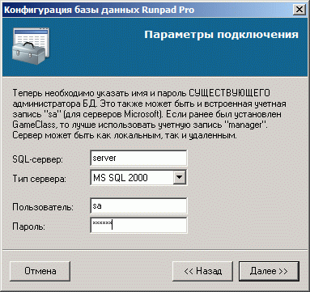
Если возникла ошибка выполнения и перед тем вы переустанавливали SQL-сервер, то необходимо удалить файлы старой базы Runpad Pro, которые остались после удаления SQL-сервера (информация только для MSSQL Server).
Обычно они находятся по след. пути: "\Microsoft SQL Server\MSSQL\Data\RunpadPro.*". После чего нужно будет запустить программу конфигурации БД еще раз.
После успешного выполнения база данных Runpad Pro полностью готова к работе и теперь нужно запустить программу администратора.
В программе сразу необходимо добавить операторов и доп. администраторов (если таковые нужны), а также установить для них необходимые права.
Важное замечание: если какой-то пользователь уже есть в SQL-базе и вы хотите, чтобы он смог работать с базой Runpad Pro, то его необходимо обязательно добавить через эту программу администратора, т.к. просто того, что он есть в базе SQL недостаточно для полноценной работы!
Доп. администраторы также могут входить в программу администратора, однако не смогут добавлять/удалять пользователей и устанавливать их права.
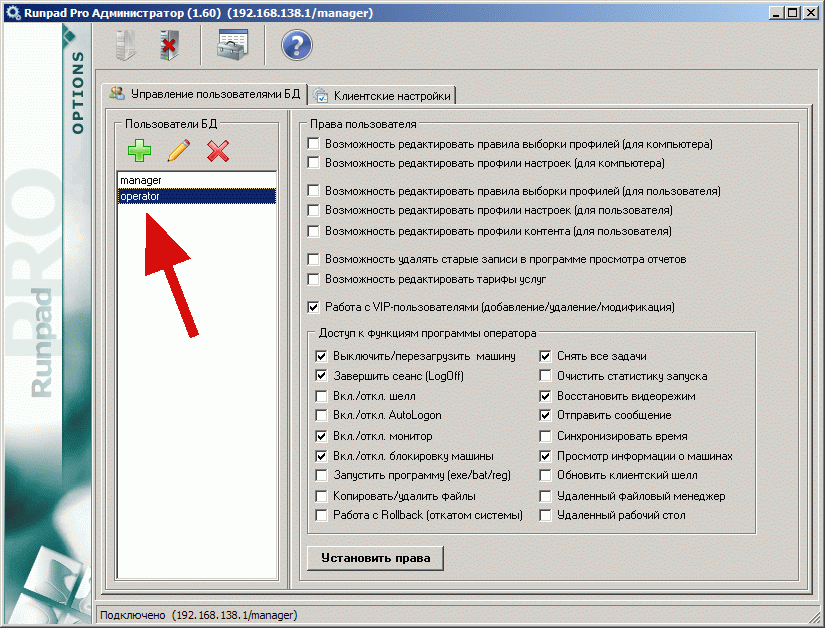
Далее необходимо перейти к странице настроек клиентских машин.
Причем можно выполнить вход в программу администратора и с новым созданным логином доп. администратора, если ему вы обеспечили соотв. права на изменения настроек.
Клиентские настройки разделены на настройки "для компьютера" и настройки "для пользователя". Следует понимать, что на одном компьютере может быть несколько пользователей.
Например, клиентский шелл использует настройки пользователя, а модуль Rollback - компьютера.
Поэтому если вы не используете шелл, а только модуль Rollback, то настройки пользователя можно не создавать (и наоборот).
Для работы клиентских машин им необходимо получать от сервера свои профили настроек при старте. При этом, настройки компьютера применяются после каждой перезагрузки компьютера, а настройки пользователя - при каждом старте шелла (т.е. входа пользователя в систему).
Необходимо создать хотя бы один профиль настроек и один профиль контента (только для пользователя). Если этого не сделать, то клиентская машина загрузится с настройками по умолчанию.
Однако одного создания профилей недостаточно, т.к. необходимо еще и правило, по которому для клиентской машины выбирались бы необходимые профили.
Можно создать несколько правил. Например, для пользователя "user" выбирать одни профили, а для "student" - другие. Или правило в зависимости от названия машины, зала, и пр.
Более подробно о правилах можно прочитать в памятке на этой странице программы.
Но для ознакомления с программой или когда для всех клиентов настройки одинаковы, достаточно только одно правило с пустой строкой самого текста правила - это означает "правило по умолчанию".
Настройки для пользователя:
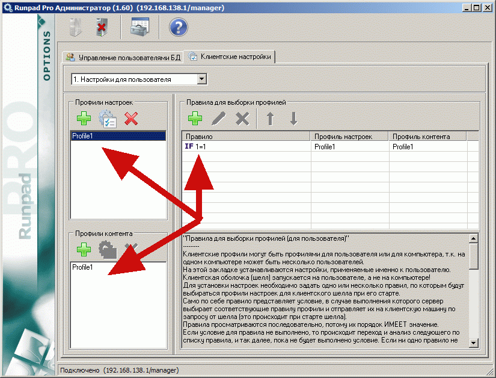
Настройки для компьютера:
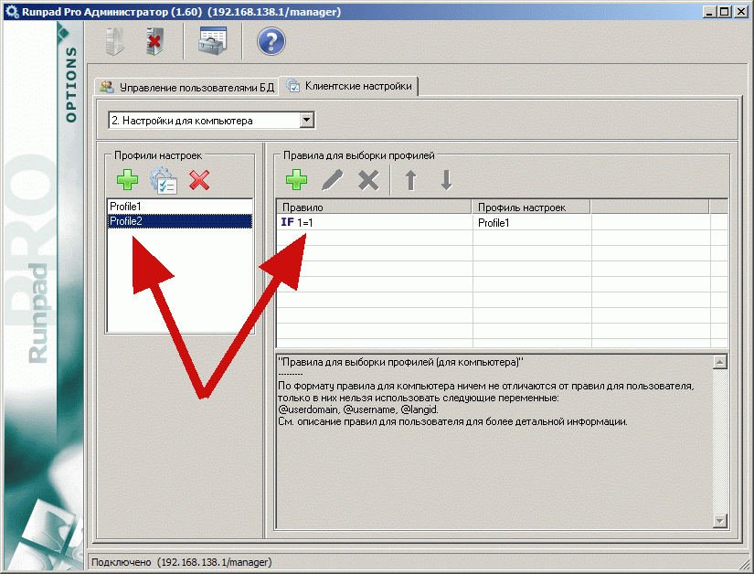
После создания пользователей, профилей и правил работу в программе администратора можно завершать.
Как рекомендация можно посоветовать сразу установить наиболее важные настройки в профиле настроек для пользователя (если используете шелл):
|
Рекомендуется установить опции аварийного отключения (см. справку по этой странице настроек для более детальной информации). 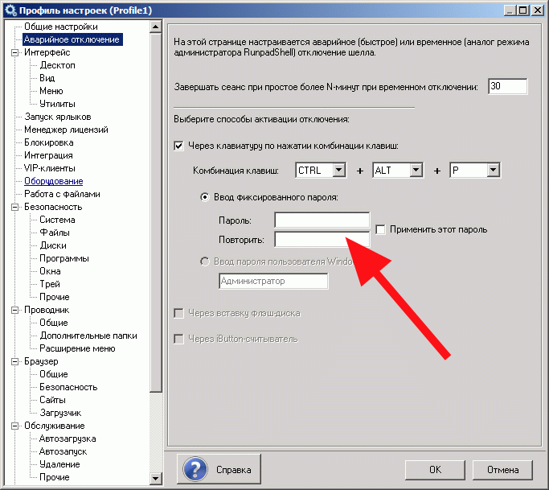 |
|
Установите сетевой путь для базовой папки всех посетителей. Каждый посетитель сможет работать со своей папкой внутри данной. 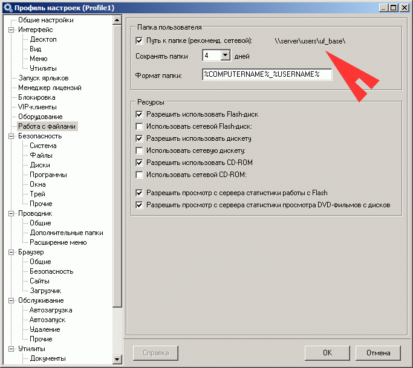 |
|
Вы можете установить любые дополнительные сетевые и локальные папки, с которыми бы пользователи смогли работать в проводнике пользователя. 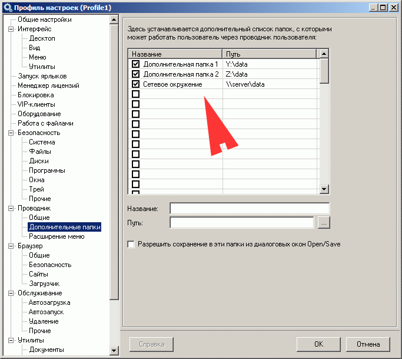 |
|
Установите сетевой путь для базовой папки всех VIP-клиентов (посетителей). 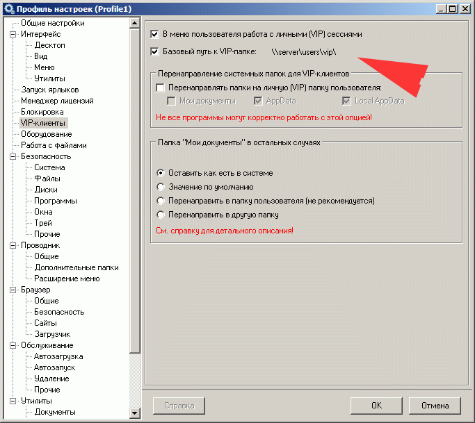 |
|
Можно указать путь к любой папке на файловом сервере, чтобы работа шелла начиналась только после старта всех необходимых служб системы и чтобы гарантированно все сетевые папки на этом сервере были доступны после старта. 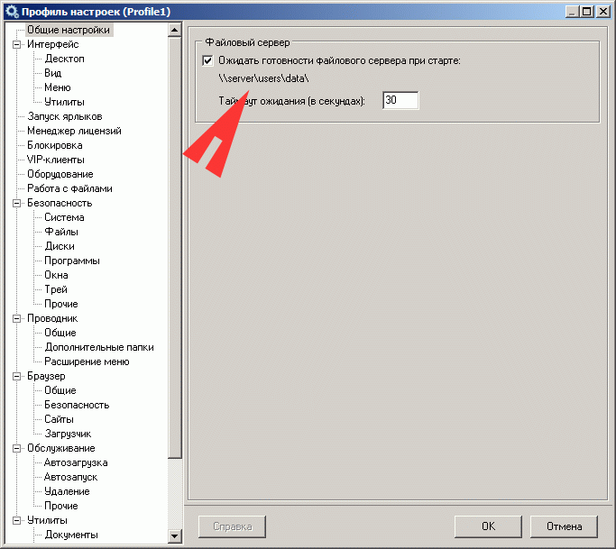 |
|
Если имеется критическая программа клиента, которая всегда должна быть запущена, однако есть риск, что посетитель ее снимет, то можно установить путь к файлу клиента в даной опции. Шелл будет всякий раз восстанавливать клиента после его снятия. Обычно эта опция используется в компьютерных клубах. 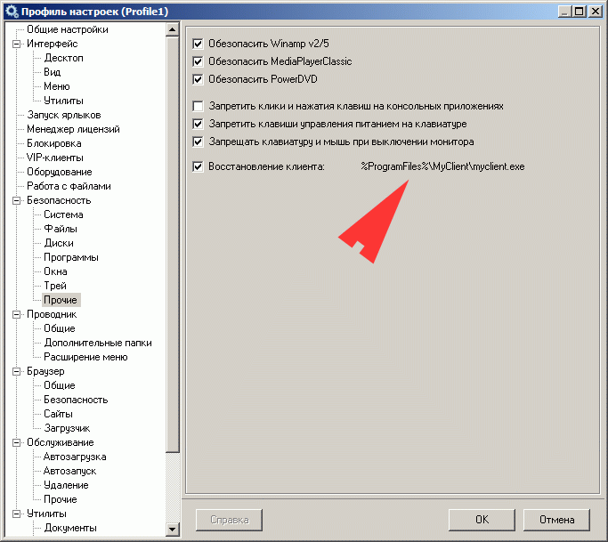 |
|
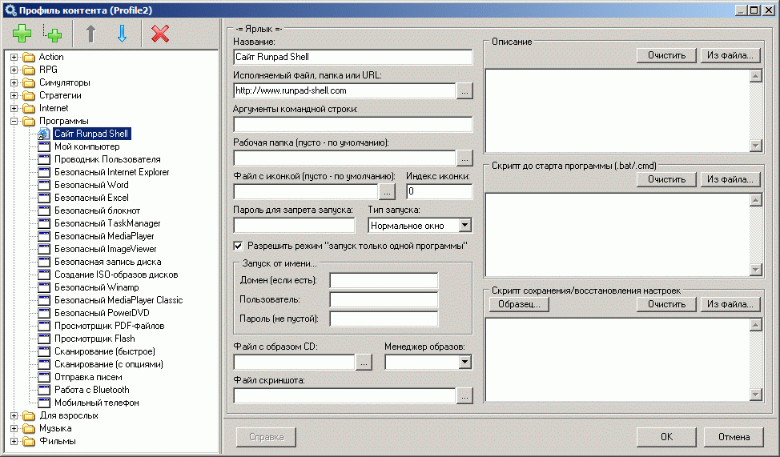 |
|
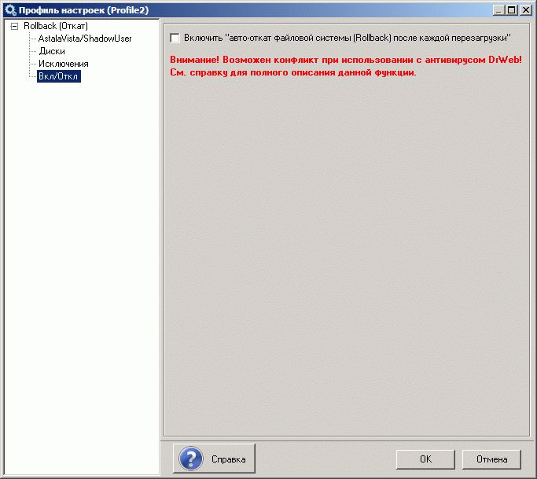 |